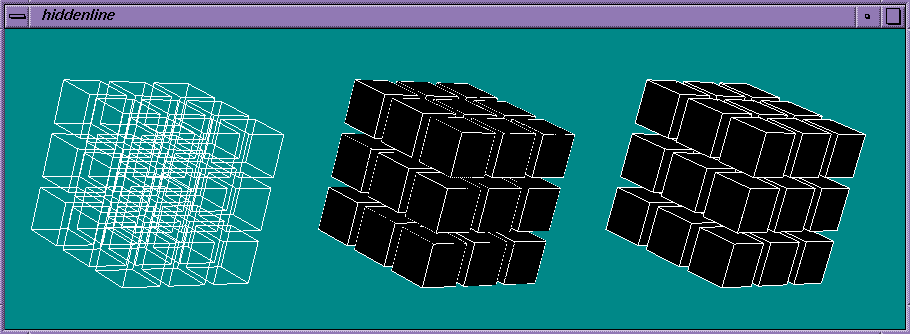

OpenGL 1.1 polygon offset functionality is useful for rendering hidden-line images, rendering solids with highlighted edges, and applying decals to surfaces. This can result in a sharper image, for example, when you want to render outlines on surfaces. The lines are not rasterized the same way the polygons are. This results in slightly different depth values which, when used by the depth buffering mechanism, cause some of the line pixels to show and some not to show. This is because triangles and lines produce different depth values and the system cannot tell ahead of time what will be in front.
This section discusses Using Polygon Offset Functionality, followed by a Polygon Offset Example Program and New Functions.
To use polygon offset functionality, you have to first call glEnable() with argument GL_POLYGON_OFFSET. You can then use the glPolygonOffset() function to offset polygon pixels in the depth buffer so that lines and points no longer interact, and that clean polygon outlines are rendered as a result. You can later disable this functionality by calling glDisable() with argument GL_POLYGON_OFFSET.
Using the glPolygonOffset() function, you can displace the depth values of fragments generated by rendering polygons by a fixed bias plus an amount. The amount is proportional to the maximum absolute value of the depth slope of the polygon, measured and applied in window coordinates. This displacement
This section illustrates how to use the glPolygonOffset() function by providing code fragments from an example program hiddenline.c that displays three images:
Figure 2-1 shows the output that the program generates. You are encouraged to run the program yourself to see the difference clearly.
Example 2-3 : Polygon Offset Example Program
/**********************************************************************
* Uses PolygonOffset to draw hidden-line images. PolygonOffset
* shifts z values of polygons by an amount proportional to their slope
* in screen z. This keeps the lines, which are drawn without
* displacement, from interacting with their respective polygons, and
* and thus eliminates line dropouts.
*/
#include <GL/gl.h>
#include <stdlib.h>
#include <stdio.h>
#include <string.h>
#define MAXQUAD 6
typedef float Vertex[3];
typedef Vertex Quad[4];
Quad quads[MAXQUAD] = { /*data to define six faces of a unit cube */
0,0,0, 1,0,0, 1,1,0, 0,1,0,
0,0,1, 1,0,1, 1,1,1, 0,1,1,
0,0,0, 1,0,0, 1,0,1, 0,0,1,
0,1,0, 1,1,0, 1,1,1, 0,1,1,
0,0,0, 0,0,1, 0,1,1, 0,1,0,
1,0,0, 1,0,1, 1,1,1, 1,1,0
};
#define WIREFRAME 0
#define HIDDEN_LINE 1
/*** function prototypes go here ***/
static int dimension = 3;
static void init (void)
{
/*** window system setup goes here ***/
/* set up viewing parameters */
glMatrixMode(GL_PROJECTION);
gluPerspective(20, 1, 0.1, 20);
glMatrixMode(GL_MODELVIEW);
glTranslatef(0, 0, -15);
/* set other relevant state information */
glEnable(GL_DEPTH_TEST);
glPolygonOffset(1.0, 2);
/* event processing goes here */
}
static void
draw_scene(int mx, int my) {
glClear(GL_COLOR_BUFFER_BIT | GL_DEPTH_BUFFER_BIT);
glPushMatrix();
glTranslatef(-1.7, 0.0, 0.0);
cubes(mx, my, WIREFRAME);
glPopMatrix();
glPushMatrix();
cubes(mx, my, HIDDEN_LINE);
glPopMatrix();
glPushMatrix();
glTranslatef(1.7, 0.0, 0.0);
glEnable(GL_POLYGON_OFFSET_FILL);
cubes(mx, my, HIDDEN_LINE);
glDisable(GL_POLYGON_OFFSET_FILL);
glPopMatrix();
}
static void
cubes(int mx, int my, int mode) {
int x, y, z, i;
/* track the mouse */
glRotatef(mx / 2.0, 0, 1, 0);
glRotatef(my / 2.0, 1, 0, 0);
/* draw the lines as hidden polygons */
glTranslatef(-0.5, -0.5, -0.5);
glScalef(1.0/dimension, 1.0/dimension, 1.0/dimension);
for (z = 0; z < dimension; z++) {
for (y = 0; y < dimension; y++) {
for (x = 0; x < dimension; x++) {
glPushMatrix();
glTranslatef(x, y, z);
glScalef(0.8, 0.8, 0.8);
for (i = 0; i < MAXQUAD; i++)
draw_hidden(quads[i], mode);
glPopMatrix();
}
}
}
}
static void
fill(Quad quad) {
glBegin(GL_QUADS);
glVertex3fv(quad[0]);
glVertex3fv(quad[1]);
glVertex3fv(quad[2]);
glVertex3fv(quad[3]);
glEnd();
}
static void
outline(Quad quad) {
/* draw an outlined polygon */
glBegin(GL_LINE_LOOP);
glVertex3fv(quad[0]);
glVertex3fv(quad[1]);
glVertex3fv(quad[2]);
glVertex3fv(quad[3]);
glEnd();
}
static void
draw_hidden(Quad quad, int mode) {
/* draw outline using white, optionally fill interior with black */
glColor3f(1, 1, 1);
outline(quad);
if (mode == HIDDEN_LINE) {
glColor3f(0, 0, 0);
fill(quad);
}
}
/* Put input processing code here if desired */
draw_scene(deltax, deltay);
}

Figure 2-1 : Polygon Offset Extension Example